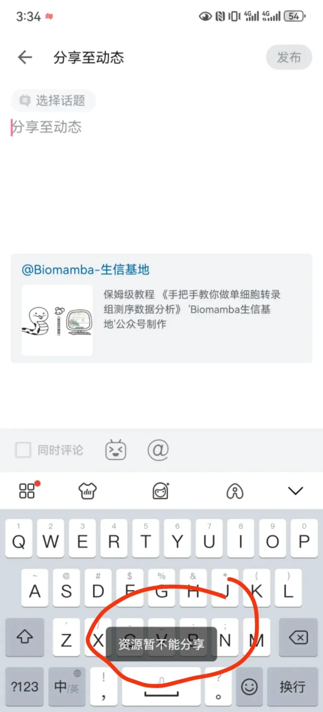
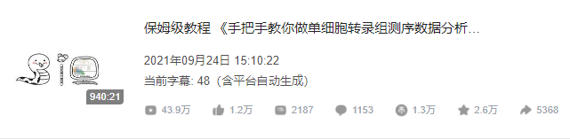
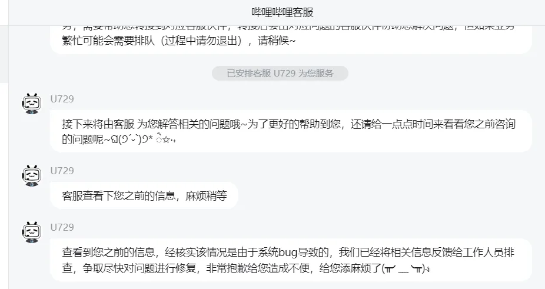

世界是个巨大的草台班子
原文：https://mp.weixin.qq.com/s?__biz=MzAwMzIzOTk5OQ==&mid=2247529141&idx=2&sn=3b04eaef9ebeece64b90a57a21eac3a6&chksm=9b3c0be5ac4b82f382bcb346f73c2d6f4733594d24def95d351dcf93d3a1d661000eb963c6ec#rd 合集：漫谈胡侃
年初的时候突然发现我们B站上四十多万播放量的单细胞视频教程不能分享到动态中。客服的回复大约就是“系统bug，回去等通知吧”。这个bug已经快半年了，居然还没有修复好。不得不说一句，世界是个巨大的草台班子。需要学习单细胞教程的同学可以通过页面底部阅读原文进行跳转。更多单细胞教程可见：生信基地122篇单细胞教程全索引。公众号也一样，各种魔改推送与引流方式，这里也恳请大家星标我们的公众号，以免收不到咱们的消息~更欢迎大家添加客服微信[Biomamba_zhushou]随时与我们交流~




如何联系我们

 留一个领取资料、免费两周学习版服务器的微信号[Biomamba_zhushou]，方便各位随时交流。同时我们也构建了交流群矩阵，欢迎大家入群讨论。
大家可以阅读完这几篇之后添加给生信入门初学者的小贴士
如何搜索公众号过往发布内容
留一个领取资料、免费两周学习版服务器的微信号[Biomamba_zhushou]，方便各位随时交流。同时我们也构建了交流群矩阵，欢迎大家入群讨论。
大家可以阅读完这几篇之后添加给生信入门初学者的小贴士
如何搜索公众号过往发布内容
已有生信基地联系方式的同学无需重复添加

 您点的每个赞和在看，我都认真当成了喜欢
您点的每个赞和在看，我都认真当成了喜欢